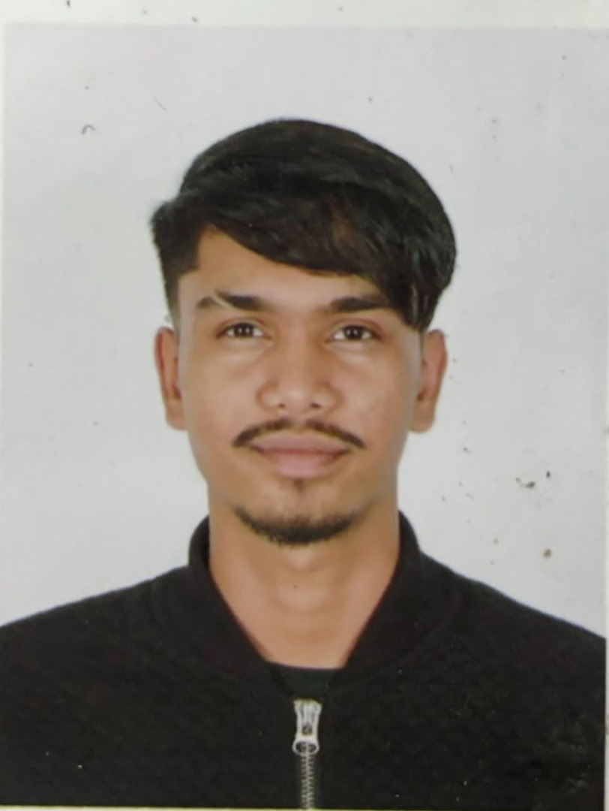

Developed an AI model that predicts climate change impacts on agriculture, helping farmers adapt their practices and reduce crop losses by 40%.
Led a project to implement IoT solutions in urban areas, improving traffic management and reducing congestion by 25%.
Created a comprehensive cybersecurity framework adopted by multiple organizations, reducing data breaches by 60%.
Contributed to a widely-used open-source project that enhances data privacy, earning recognition from the tech community.
Developed a blockchain-based system for tracking food supply chains, ensuring transparency and reducing food fraud.
Created a VR platform for immersive learning experiences in schools, increasing student engagement and retention rates.
Designed an app that connects volunteers with disaster relief efforts, streamlining resource allocation during emergencies.
Developed a machine learning tool that assists doctors in diagnosing diseases with 95% accuracy.
Founded a mentorship program for women in tech, increasing female representation in STEM fields by 30%.
Organized an international coding competition that encourages young programmers to solve real-world problems, fostering innovation.
Lakuleshh Levis
Developed an AI system that predicts patient outcomes, significantly improving treatment plans and reducing hospital readmission rates.
Created an AR application for therapeutic use in mental health, helping patients manage anxiety and depression.
Launched a data science initiative that analyzes social issues, providing actionable insights to non-profits and governments.
Spearheaded a global campaign to educate the public on cybersecurity best practices, reducing phishing attacks by 50%.
Invented a wearable device that monitors vital signs and alerts users to potential health issues in real-time.
Developed a real-time translation app that breaks down language barriers, facilitating communication in multicultural environments.
Created a platform that connects businesses with sustainable technology solutions, promoting eco-friendly practices.
Established a program that teaches digital skills to underserved communities, improving job prospects and economic mobility.
Launched an online platform for researchers to collaborate on AI projects, accelerating innovation in the field.
Initiated a project to collect and analyze health data globally, providing insights that inform public health policies.
Ryan Danish
Developed a smart home system that integrates AI to optimize energy usage, reducing household energy consumption by 30%.
Created a predictive analytics tool that helps retailers optimize inventory management, reducing waste and increasing profits.
Designed an educational game that teaches coding concepts to children, making learning fun and interactive.
Developed an AI system that predicts natural disasters, enabling timely evacuations and saving lives.
Pioneered the use of digital twin technology in manufacturing, improving efficiency and reducing downtime by 20%.
Created a mobile app that tracks health metrics and provides personalized wellness recommendations, improving user health outcomes.
Developed a secure blockchain-based voting system that enhances election integrity and transparency.
Designed a comprehensive remote work platform that enhances collaboration and productivity for distributed teams.
Created a personal finance app that uses AI to help users manage their budgets and save money effectively.
Developed assistive technology solutions for individuals with disabilities, improving their quality of life and independence.
Muhammad Rizky
Led the team that won the National Marketing Excellence Award in 2022.
Developed a blockchain-based system for secure and transparent supply chain management.
Created a machine learning model that can predict the likelihood of a patient developing a disease.
Designed and implemented a cloud-based infrastructure for a major healthcare institution.
Published a research paper on the application of computer vision in medical imaging.
Developed a system that uses natural language processing to analyze and summarize large documents.
Built a recommendation system that uses collaborative filtering to suggest products to customers.
Created a mobile app that uses augmented reality to provide an immersive gaming experience.
Developed a system that uses computer vision to detect and prevent cyber attacks
Published a book on the basics of data science for beginners.
Developed a system that uses machine learning to predict and prevent traffic congestion.

Kishenrraj
Created a groundbreaking startup that successfully raised seed funding of $1M.
Developed an AI-driven platform that analyzes disaster data to optimize resource allocation during humanitarian crises, significantly improving response times.
Created a blockchain-based identity verification system that enhances security and privacy for online transactions, reducing identity theft by 70%.
Launched a smart agriculture platform that uses IoT sensors to monitor crop health and optimize irrigation, increasing yields by 40%.
Established a coding bootcamp for underprivileged youth, providing them with skills that lead to job placements in tech companies, improving their economic prospects.
Developed a mobile app that helps users track and reduce their carbon footprint, promoting sustainable living practices.
Created an AI chatbot that provides mental health support and resources, making mental health care more accessible to those in need.
Organized an international technology conference that brings together innovators and thought leaders to discuss solutions for global challenges.
Founded an open-source community that encourages collaboration on projects aimed at solving social issues, fostering innovation and inclusivity.
Launched a digital literacy campaign that educates communities on safe internet practices, reducing online scams and cyberbullying incidents.
Muhammad Fauzan
Developed an award-winning app that has over 100,000 downloads worldwide.
Created an AI system that assists doctors in diagnosing rare diseases, improving diagnostic accuracy and patient outcomes.
Developed a VR therapy program for patients with PTSD, helping them manage symptoms and improve their quality of life.
Launched a data analytics platform that helps non-profit organizations measure their impact and optimize fundraising strategies.
Established a cybersecurity training program for small businesses, helping them protect against cyber threats and data breaches.
Designed a smart city initiative that integrates IoT technology to improve urban infrastructure, enhancing public safety and transportation efficiency.
Created an AI-driven language learning app that personalizes lessons based on user progress, making language acquisition more effective.
Developed a community health monitoring system that collects and analyzes health data, providing insights for public health interventions.
Designed assistive technology tools for individuals with disabilities, improving their access to information and services.
Organized a global coding challenge that encourages young developers to create solutions for pressing social issues, fostering innovation and collaboration.